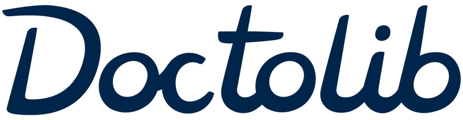
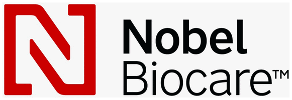
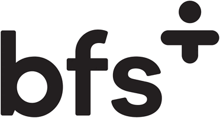
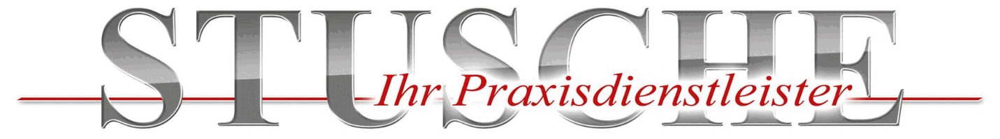
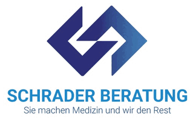

Praxisabgabe
Bewertung, Nachfolgersuche und Übergabe Ihrer Praxis. Inklusive Begleitung durch das Nachbesetzungsverfahren, wo es erforderlich ist.
Praxisabgabe, MVZ-Gründung und Personalfragen für niedergelassene Ärztinnen und Ärzte in Berlin, Brandenburg und Umgebung. Wir bringen unternehmerisches Denken in den Praxisalltag, ohne Ihnen die Entscheidung abzunehmen.
Ob Sie Ihre Praxis abgeben, ein MVZ gründen oder Ihr Team neu aufstellen: unternehmerisches Wissen und medizinischer Praxisalltag gehören zusammen gedacht.
Bewertung, Nachfolgersuche und Übergabe Ihrer Praxis. Inklusive Begleitung durch das Nachbesetzungsverfahren, wo es erforderlich ist.
Strukturaufbau für Ihr Medizinisches Versorgungszentrum, mit Koordination ab dem ersten Tag. Vom Umbau bis zur Neuplanung, damit Ihr MVZ oder Ihre Praxis von der ersten Idee bis zur Eröffnung sauber geplant und umgesetzt wird.
Teamstrukturen, Zuständigkeiten und Personalplanung für Praxen, die wachsen oder übergeben werden sollen.
Abläufe, die mit Ihrer Praxis mitwachsen, statt sie mit jedem neuen Mitarbeiter auszubremsen.
Die administrativen und organisatorischen Schritte einer Praxisauflösung aus erster Hand.
Existenzängste? Rote Zahlen? Sie müssen diesen Druck nicht allein tragen. Mit einem verlässlichen Partnernetzwerk werfen wir einen klaren, professionellen Blick auf Ihre Zahlen und Möglichkeiten, von der Sanierung bis zur geordneten Auflösung, damit aus wirtschaftlichem Druck keine ausweglose Lage wird.
„Ärztinnen und Ärzte entscheiden jeden Tag über viel. Bei der eigenen Praxis stehen sie damit oft allein."
Ich kenne die Realität niedergelassener Praxen und weiß, wie viel davon abhängt, dass jemand verlässlich erreichbar ist, wenn eine Entscheidung ansteht. Deshalb bleibe ich Ihre Ansprechpartnerin, vom ersten Gespräch bis zum Abschluss.
Für niedergelassene Ärztinnen und Ärzte, die ihre Praxis abgeben, an eine Nachfolge übergeben oder in eine andere Struktur überführen wollen. Gohl Consulting begleitet Einzelpraxen, Gemeinschaftspraxen und Berufsausübungsgemeinschaften. Sinnvoll ist ein Gespräch, sobald die Abgabe ein Thema wird, nicht erst wenn der Termin feststeht.
Ja, das ist der Schwerpunkt. Gohl Consulting arbeitet in Berlin, Brandenburg und Umgebung. Ein Schwerpunkt liegt auf dem ländlichen Raum, auch dort, wo die Nachfolgesuche schwieriger ist als in Potsdam oder Berlin. Sie erreichen Gohl Consulting in der Hildegardstr. 32, 15806 Zossen, telefonisch unter 0172 3945278 und per E-Mail an info@gohl-consulting.de.
In gesperrten Planungsbereichen wird ein frei werdender Vertragsarztsitz nicht einfach verkauft, sondern über ein Verfahren bei der Kassenärztlichen Vereinigung ausgeschrieben und nachbesetzt. Gohl Consulting bereitet die Unterlagen vor, stimmt den Zeitplan mit Ihrer Praxisplanung ab und begleitet Sie durch die einzelnen Schritte. Die anwaltliche Vertretung übernimmt bei Bedarf eine Fachkanzlei.
Entscheidend sind die Gründungsberechtigung, die Rechtsform, die ärztliche Leitung und die Frage, welche Arztsitze in das Zentrum eingebracht werden. Gohl Consulting klärt diese Punkte vor der Antragstellung, weil eine spätere Korrektur der Struktur deutlich aufwendiger ist als eine saubere Planung am Anfang.
Eine große. Viele Praxen scheitern nicht an der Nachfrage, sondern an fehlendem Personal und an Abläufen, die mit dem Team nicht mehr zusammenpassen. Gohl Consulting arbeitet an Teamstruktur, Zuständigkeiten und Personalplanung, damit die Praxis auch bei Wachstum oder Übergabe stabil bleibt.
Mit einem unverbindlichen Erstgespräch, in dem Ihre Ausgangslage eingeordnet wird. Es findet auf Wunsch in Ihrer Praxis, telefonisch oder per Videoverbindung statt. Ein Angebot entsteht erst danach, wenn klar ist, welche Leistung Sie tatsächlich brauchen.
Wo Spezialwissen gefragt ist, arbeiten wir mit Partnern zusammen, die wir kennen und deren Arbeit wir einschätzen können.





Schreiben Sie kurz, worum es geht. Sie bekommen eine persönliche Antwort, keine Serienmail.
Ihre Nachricht ist angekommen. Sie hören persönlich von uns.